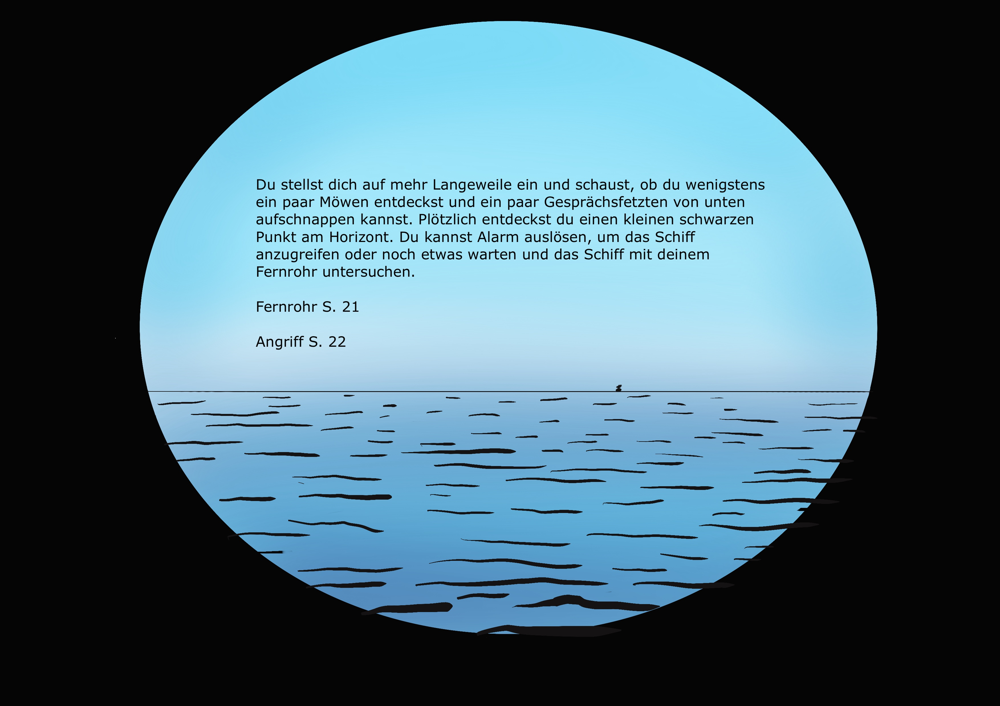

Du stellst dich auf mehr lange Weile ein und schaust, ob du wenigstens ein paar Möwen entdeckst oder ein paar Gesprächsfetzen
von unten aufschnappen kannst. Plötzlich entdeckst du einen kleinen Schwarzen Punkt am Horizont.
Du kannst Alarm auslösen, um das Schiff anzugreifen oder noch etwas warten und das Schiff mit deinem Fernrohr untersuchen.
Fernrohr (Seite 22)
Angriff (Seite 23)